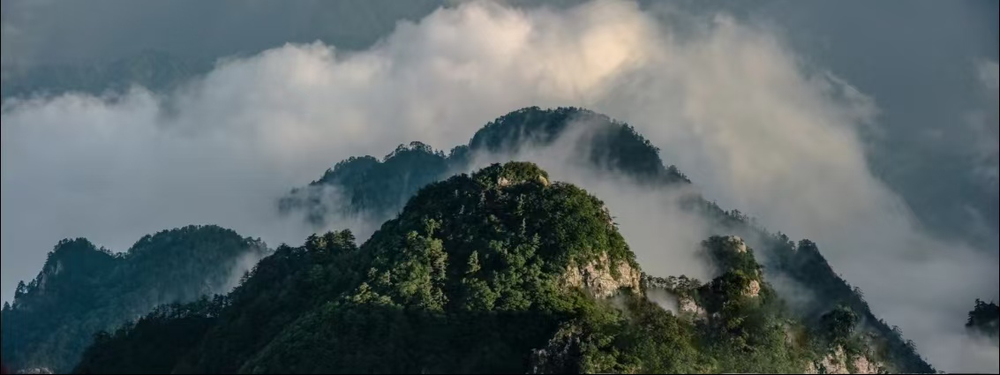
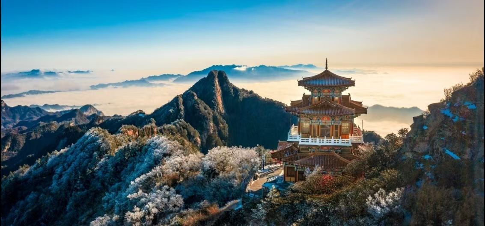

洛阳白云山坐落于河南省洛阳市嵩县，地处伏牛山核心区域，是国家AAAAA级旅游景区、国家级自然保护区。景区占地面积广阔，群山连绵起伏，森林覆盖率极高，自然生态环境优越。
白云山以高山、峡谷、瀑布、云海、森林为主要特色，气候凉爽宜人，是中原地区知名的避暑旅游目的地。这里山水相依、风光秀丽，兼具险峻山岳与柔美水景，适合休闲旅游、康养度假与自然风光观赏。

📍 地址：河南省洛阳市嵩县车村镇白云山风景区
🎫 门票：成人常规门票，学生凭学生证享半价优惠，老人、儿童享有对应减免政策
⏰ 开放时间
全年正常开放，日间游览为主，淡旺季开放时间略有调整
🚗 交通指南
🍜 当地特色美食
游客中心入园 → 芦花谷休闲漫步 → 九龙瀑布群观赏水景 → 森林氧吧休憩放松 → 乘坐观光车前往玉皇顶区域 → 打卡高山观景台 → 结束游览返程。
时间充足可选择山上住宿，次日清晨登顶看云海日出，游玩体验更加丰富。
1. 山区海拔偏高，昼夜温差明显，出行常备薄外套。
2. 景区山路台阶较多，穿着舒适防滑运动鞋出行。
3. 夏季多雨，山区天气多变，建议随身携带雨具。
4. 林区禁止明火，爱护自然环境，不乱扔垃圾。
5. 节假日游客较多，建议错峰出行，提前预约门票。
6. 爬山量力而行，合理规划行程，避免过度劳累。
春季草木复苏，山花遍地，空气清新，适合踏青出游；夏季气温凉爽，是天然避暑胜地，远离城市酷暑；秋季山林红叶浸染，层林尽染，景色唯美；冬季雪景纯净，山林银装素裹，氛围感独特。